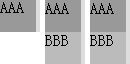
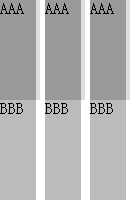
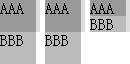
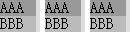

根据 CSS2.1 规范关于 "百分比" 为单位的 'height' 特性值的计算的描述，当指定一个百分比高度时，百分比的计算基于生成框的包含块的高度。如果包含块的高度没有明确指定（如依赖于其内容高度），并且这个元素不是绝对定位的，那么高度计算为 auto。
关于 'height' 特性的更多信息，请参考 CSS2.1 规范 10.5 Content height: the 'height' property 中的内容。
在表格级元素中，当单元格的高度没有明确指定（如为百分比），其子元素的高度仍然为未明确指定的百分比时，IE 混杂模式及 Firefox 对于这种多层嵌套的表格级元素百分比高度计算将出现错误。
此现象若被触发，可能导致表格元素的高度布局出现很大异常，最终导致页面布局混乱。
| IE6(Q) IE7(Q) IE8(Q) Chrome(S) Safari(S) Opera(Q) Firefox |
|---|
分析以下代码：
<style> * { margin:0; padding:0; font:16px/100% Simsun; vertical-align:top; } </style>
<body style="height:100px;"> <div id="cont" style="width:40px;
background:#DDD; float:left; margin-right:5px;"> <table id="float_cont"
cellpadding="0" cellspacing="0" style="width:100%; height:100%; float:left;"> <tr> <td>
<table class="sub" cellpadding="0" cellspacing="0" style="width:90%;
height:100%; background:#999;"> <tr> <td>AAA</td> </tr> </table>
<table class="sub" cellpadding="0" cellspacing="0" style="width:90%;
height:100%; background:#BBB;"> <tr> <td>BBB</td> </tr> </table>
</td> </tr> </table> </div> <div id="cont"
style="width:40px; background:#DDD; float:left; margin-right:5px;"> <div id="float_cont" style="display:table; width:100%; height:100%; float:left;"> <div
class="sub" style="display:table; width:90%; height:100%;
background:#999;">AAA</div> <div class="sub" style="display:table;
width:90%; height:100%; background:#BBB;">BBB</div> </div> </div> <div id="cont" style="width:40px; background:#DDD; float:left;"> <div id="float_cont" style="display:block; width:100%; height:100%; float:left;"> <div
class="sub" style="display:block; width:90%; height:100%;
background:#999;">AAA</div> <div class="sub" style="display:block;
width:90%; height:100%; background:#BBB;">BBB</div> </div> </div>
</body>
上述代码 BODY 元素高为 100px。其内包含三组元素，每组均为一个宽 40px 的容器 cont 内包含一个宽高均为 100% 的浮动元素 float_cont，这个块级元素内包含了两个高度为 100% 的元素 sub。区别为：
这段代码在不同浏览器中运行结果如下：
| IE6(Q) IE7(Q) IE8(Q) | Firefox(Q) Chrome(Q) Safari(Q) | Firefox(S) | IE6(S) IE7(S) IE8(S) Chrome(S) Safari(S) Opera(S) |
|---|---|---|---|
|  |  |  |  |
测试代码中 cont 没有明确的设置一个高度，则其 'height' 特性为默认的 auto。而其子元素 float_cont 的 'height' 值为 100%，其内部的 sub 的 'height' 也为 100%。则对于 float_cont 其高度为百分比高度，其具体的计算值取决于其包含块，但是其包含块 cont 的高度又为 auto，根据 CSS2.1 规范，float_cont 的 'height' 特性的值将计算为 auto。此时对于 sub 与其包含块 float_cont 则又出现了上述情况，那么 sub 的 'height' 特性的值也将计算为 auto。
由此可见：
IE6(Q) IE7(Q) IE8(Q) 与 Firefox 的错误渲染可以认为：
浏览器首先将 float_cont 与 sub 的 'height' 特性计算为 auto，最终得到了
cont 的高度为 32px。但此时浏览器再次为 float_cont 与 sub 以设定值 100% 对他们的高度进行了重新计算，导致这三个元素的实际计算高度变为了 32px * 100% = 32px。
IE6(Q) IE7(Q) IE8(Q) 中则又触发了子元素尺寸超过父容器会撑大父容器尺寸的 Bug。
尽量避免为 TABLE 级别的元素设置百分比为单位的 'height' 特性，以避免 Firefox 对 TABLE 级别元素的高度算法 Bug。
| 操作系统版本: | Windows 7 Ultimate build 7600 |
|---|---|
| 浏览器版本: |
IE6
IE7 IE8 Firefox 3.6.3 Chrome 6.0.408.1 dev Safari 4.0.5 Opera 10.53 |
| 测试页面: |
table_height_percent_q.html
table_height_percent_s.html |
| 本文更新时间: | 2010-07-16 |
TABLE height percent nested 百分比 高度 嵌套 表格